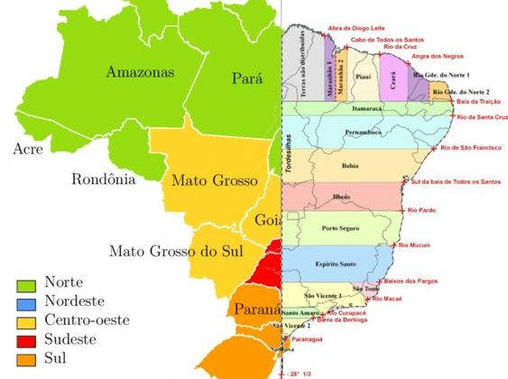
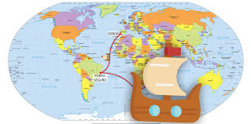
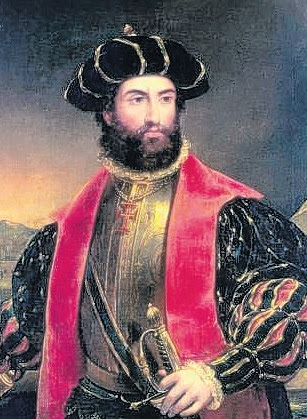

Biografia: Pedro Álvares Cabral
"Desvendando a História"
Pedro Álvares Cabral (1467-1520) foi um navegador e explorador português, capitão-mor da frota portuguesa que avistou a costa do Brasil em 22 de abril de 1500.
Pedro Álvares Cabral nasceu em Belmonte, Portugal, em 1467. De família nobre, famosa nas lutas contra os mouros e castelhanos, com onze anos foi para Lisboa na época do reinado de Afonso V (1438-1418) onde, estudou literatura, história e cosmografia e aprendeu a usar armas.
Com 16 anos, na corte de D. João II (1481-1495), aperfeiçoou-se em cosmografia e estudou técnicas militares. Nessa época, tiveram início as grandes navegações. Experientes no uso de caravelas os portugueses passaram a explorar a costa ocidental da África.
Em 1488, Bartolomeu Dias cruzou o cabo da Boa Esperança, extremo sul da África, e em 1498, Vasco da Gama chegou a Calicute, na Índia, de onde buscavam as sedas e as especiarias.
Tratado de Tordesilhas
Acredita-se que o navegador espanhol Vicente Yáñez Pinzón tenha passado pela costa pernambucana e desembarcado no cabo de Santo Agostinho no dia 20 de janeiro de 1500, que ele denominou de cabo de Santa Maria de la Consolacion.
Porém, desejando assegurar seu domínio sobre as terras descobertas por Cristóvão Colombo , a Espanha estabeleceu uma divisão das terras espanholas e portuguesas, conforme o Tratado de Tordesilhas, assinado em 7 de junho de 1494, entre Fernando II de Aragão e Dom João II de Portugal.
O Tratado de Tordesilhas determinava que uma linha demarcatória traçada a trezentos e setenta léguas a oeste do arquipélago de Cabo Verde separava as terras de Portugal e Espanha, dando a Portugal, mesmo antes do descobrimento, uma área de 2 800 000 quilômetros quadrados no Brasil.
Chegada ao Brasil
No dia 22 de abril, a esquadra de Pedro Álvares Cabral avistou novas terras. No dia 23, desembarcou no local que denominaram “Porto Seguro” (hoje baía Cabrália), entre a ilha da Coroa Vermelha e a baía rasa de Santa Cruz, na Bahia, travando os primeiros contatos com os indígenas.
No dia 26 de abril, na ilha da Coroa Vermelha, foi rezada a primeira missa no Brasil. Nos dias que se seguiram, Cabral organizou diversas excursões para conhecer melhor o lugar.
No dia 1 de maio, uma cruz foi levada até às margens. Tinha as armas de Portugal esculpidas, era o marco da soberania portuguesa. Foi colocada na entrada da floresta, diante de um pequeno altar, onde foi celebrada a segunda missa, como cerimônia de posse das terras, sob os olhares dos indígenas.
Pedro Álvares Cabral decidiu enviar as notícias da descoberta ao rei D. Manuel I e o escrivão Pero Vaz de Caminha registrou todos os acontecimentos. Assim iniciou sua carta:
A carta de sete folhas – o primeiro documento da história do Brasil – escrita no dia 1 de maio de 1500 foi então levada para Portugal na nau de Gaspar de Lemos. (O original se encontra no Arquivo Nacional da Torre do Tombo, em Portugal).
Rumo à Índia
No dia 2 de maio, os demais navios seguiram para a Índia. No dia 13 de maio, quatro embarcações, entre as quais a de Bartolomeu Dias, foi destruída por violentas tempestades, próximo ao cabo da Boa Esperança, local que anos antes havia navegado.
Três meses depois de deixar o Brasil, Cabral chegou à Calicute, na Índia, onde não conseguiu manter uma relação amistosa com a população. A frota sofreu um ataque dos muçulmanos, quando mais de trinta portugueses foram mortos.
Em seguida, Cabral conseguiu tomar todas as embarcações ancoradas no porto, confiscou as cargas e mandou incendiá-las. Depois de conquistar a cidade, Cabral estabeleceu uma feitoria e celebrou tratados de paz. Seguiu para Cananor, onde abasteceu as naus de especiarias.
Retorno à Europa
No dia 16 de janeiro de 1501, Cabral iniciou o caminho de volta. Chegando a Moçambique, iniciou o restauro das embarcações.
No dia 21 de julho de 1501, Pedro Álvares Cabral chegou a Lisboa com apenas seis navios remanescentes da grande esquadra carregados de especiarias. Cabral foi recebido com festas, era a consolidação do comércio com o Oriente.
Em 1503, Pedro Álvares Cabral casou-se com D. Isabel de Castro, filha de D. Fernando de Noronha e de Constança de Castro. O casal teve seis filhos.
Cabral foi nomeado para o comando de uma nova expedição, mas depois de oito meses de preparativos e desentendimentos com o rei, ele foi substituído por Vasco da Gama.
Em 1509, Cabral retirou-se para sua propriedade, perto de Santarém. Em 1515, teve sua pensão aumentada e foi citado no “Livro dos Moradores da Casa D’El Rei D. Manuel I”, como “Cavaleiro do Conselho Régio”. Mas era tarde para uma reaproximação.
Pedro Álvares Cabral faleceu em Santarém, Portugal, no ano de 1520. Seu corpo foi sepultado na Igreja da Graça.